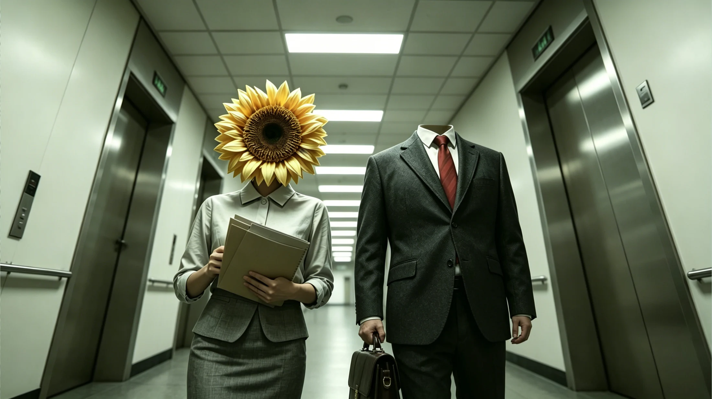
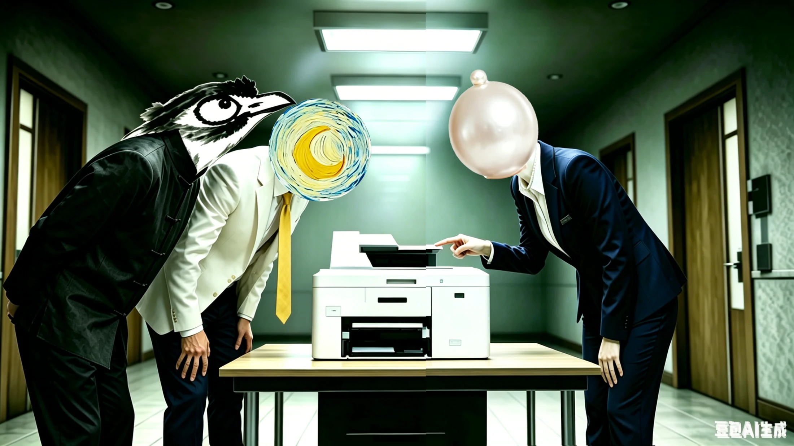

一间办公室，
一座人格画廊。
我把经典名画从画框里请出来，放到最日常的职场中。向日葵是过度热情的同事，星空浪漫而不切实际，方块冷峻高效。熟悉的工作场景与不可能的面孔并置，让幽默和异化同时发生。

A FILM BY HANYU BI
职位已确认。
身份，尚未确认。
新入职的亚当发现，同事们的脑袋是向日葵、星空、尖叫与时钟。唯独他，脖子以上空空如也。没有身份卡，就无法打卡；他必须在这间越来越荒诞的办公室里，找到一个适合自己的“脑袋”。
如果每个人都戴着一种人格，
成为自己，还需要谁的批准？
每一颗脑袋，都是一幅行走的画。
拖动工牌，松手看它回摆 · 点击查看角色

我把经典名画从画框里请出来，放到最日常的职场中。向日葵是过度热情的同事，星空浪漫而不切实际，方块冷峻高效。熟悉的工作场景与不可能的面孔并置，让幽默和异化同时发生。
故事与导演阐述 · 含结局
亚当第一天入职，却没有面孔，也没有完成打卡所需的 ID 卡。办公室里的每颗脑袋都像一种现成的人格：向日葵热情，星空浪漫，方块高效。他观察、比较，试图找到适合自己的那一种。打印机卡纸引来的尖叫、步步紧逼的倒计时，让这场寻找变得越来越焦虑。
无功而返的亚当走进酒吧，遇见了同样经历过“失去头颅”的路易十六。这个带着自嘲与从容的男人，送给他一顶帽子，也让他意识到：不必从别人的模样里挑选自己。第二天拍摄身份照时，亚当终于作出了自己的选择，长出了人类的面孔。
故事没有停在“找回自我”的圆满时刻。亚当又将苹果挡在脸前，成为马格利特《人类之子》中的形象。为了融入环境，他给刚刚诞生的自我加上了另一层伪装。那颗苹果既是平凡的象征，也是一个未被解决的问题。
真正的独特，源于做回自己，
也接受平凡。
我希望用这则超现实寓言，讨论人在制度中的异化、身份焦虑与自我创造。名画与办公室的并置，让观众在熟悉中感到荒诞；冷灰绿到暖黄的变化，轻快爵士与突变电子音的交织，则让幽默和压抑共同存在。
苹果让结局保留了矛盾：找到自己，并不意味着从此不再妥协。我们戴上的“普通”，究竟是生存的保护色，还是另一种自我的丢失？这也是影片想留给观众的思考。
查看完整导演阐述 ↗